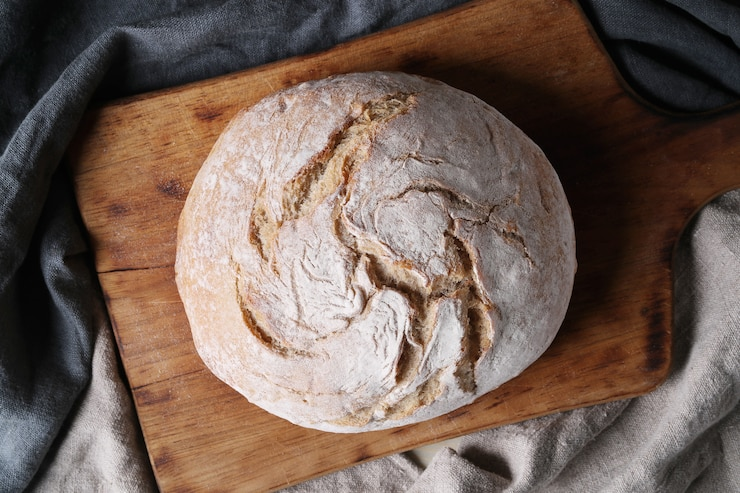

Flower Focaccia
Bake this quick, decorative bread for your next fancy potluck!
BY LYDA JONES BURNETTE PUBLISHED: AUG 11, 2021
| YIELDS: | PREP. TIME: | TOTAL TIME: |
|---|---|---|
| 6 - 8 serving(s) | 25 mins | 1 hr 40 mins |
| INGREDIENTS | DIRECTIONS |
|---|---|
|
1 c. warm water 1 tsp. sugar 1 tsp. rapid-rise yeast (from one 3/4-ounce package) 2 1/2 c. bread flour, spooned and leveled, plus more for work surface 1 tsp. kosher salt, plus extra for sprinkling 1 tbsp. plus 2 teaspoons olive oil, plus more for pan Toppings: olives, thinly sliced bell peppers, sliced red and green jalapeño peppers, cilantro leaves, chopped fresh chives |
Step 1 : Stir together water and sugar in a glass measuring cup. Sprinkle yeast over top and stir to dissolve. Let stand until bubbly, 4 to 6 minutes (if yeast does not bubble, discard and begin again). Step 2 : Lightly grease a bowl. Whisk together flour and salt in a second bowl. Stir in yeast mixture. Transfer to a lightly floured work surface and knead until dough is soft and pliable, 4 to 6 minutes. Transfer to prepared bowl and cover with a kitchen towel. Let rise until doubled in size, about 1 hour. Step 3 : Preheat oven to 400°F. Add 1 tablespoon oil to a 10-inch cast-iron skillet, swirling to coat. Transfer dough to skillet, using fingertips to spread to edges of pan. Let stand 10 minutes. Top with desired toppings, creating flower shapes, and drizzle with remaining 2 teaspoons oil. Sprinkle with salt. Step 4 : Bake until golden brown, 20 to 25 minutes. |
Five-Grain Bread
PUBLISHED: JUN 25, 2007

Toast this bread and serve it with your favorite soup.
| YIELDS: | CAL/SERV: |
|---|---|
| 9 | 228 |
| INGREDIENTS | DIRECTIONS |
|---|---|
|
2 1/2 c. bread flour 1 c. whole wheat flour 1/4 c. coarse cornmeal 1/4 c. old-fashioned rolled oats 1 tbsp. old-fashioned rolled oats 1/4 c. wheat germ 1/4 c. cooked rice 1/4 c. brown sugar 2 1/2 tsp. instant active dry yeast 2 tsp. salt 2 tbsp. Honey 1/2 c. Buttermilk 3/4 c. SPRING WATER 1 tbsp. vegetable oil 1 Egg |
Step 1: Make the dough: In a large bowl or food processor fitted with metal blade, combine the flours, cornmeal, 1/4 cup oats, wheat germ, rice, sugar, yeast, and salt. In a small bowl, combine the honey and buttermilk and stir into the dry mixture. Using a wooden spoon to mix by hand, add the water 1/4 cup at a time until a stiff dough comes together, or process until dough comes together and rides around the bowl with the blade. On a work surface lightly dusted with whole-wheat flour, knead dough by hand until glossy and elastic -- about 10 minutes -- or process in food processor for 45 more seconds. Step 2: Proof the dough: Coat a large bowl with the vegetable oil. Shape dough into a ball and place in the bowl, turning dough to coat all sides. Cover bowl with a clean, damp kitchen towel and let rise in a warm, draft-free place until doubled in size -- 1 to 11/2 hours. Step 3: Form the loaf: Punch down the dough and shape into a tight ball. Return dough to the floured surface, cover, and let rest for 10 minutes. Sprinkle a baking sheet with cornmeal. Shape the dough into a 10-inch oval, tapering the ends, and place on the baking sheet. Cover with damp kitchen towel and let rise in a warm, draft-free place until doubled in size -- about 1 hour. Step 4: Bake the bread: Preheat oven to 350 degrees F. In a small bowl, lightly beat egg with 1 tablespoon of water. Brush loaf with egg wash and sprinkle with remaining tablespoon rolled oats. Using a sharp knife or razor blade, cut 3 diagonal slashes in the top of the dough. Bake in the lower third of the oven until the loaf is golden brown and sounds hollow when lightly tapped -- 50 to 60 minutes. Cool on a rack. Serve at room temperature or toasted. Store in an airtight container. |
Tips & Techniques
To make a sunflower loaf, substitute 1/2 cup hulled sunflower seeds for the rice and add 1 more tablespoon of honey. Sprinkle top with sun-flower seeds before baking.
Raisin Pumpernickel Bread
PUBLISHED: JUN 25, 2007

Here is the loaf for Sunday brunch. The bread is a deep brown, infused with the subtle flavors of cocoa, coffee, molasses, and rye. Toast it and spread with cream cheese and you won't want another thing. Exchange the raisins for 1 tablespoon of caraway seeds and you'll have a terrific bread for a Reuben or a corned-beef sandwich.
| YIELDS: | CAL/SERV: |
|---|---|
| 10 | 173 |
| INGREDIENTS | DIRECTIONS |
|---|---|
|
1 c. whole-wheat flour 1 1/2 c. medium rye flour 1 c. bread flour 2 1/4 tsp. instant active dry yeast 1 tbsp. salt 2 tbsp. Dutch-Processed Cocoa 1 tbsp. espresso powder 1/2 c. milk, warmed to 100 degrees F 1/4 c. SPRING WATER 2 tbsp. dark molasses 1 tbsp. vegetable oil 1/2 c. raisins 1/2 c. boiling spring water 1 egg white |
Step 1: Make the dough: In a large bowl or food processor fitted with metal blade, combine the flours, yeast, salt, and cocoa. In a small bowl, stir espresso powder into milk and add molasses. Use a wooden spoon to stir the liquid into the flour mixture or process until the dough comes together. On a lightly floured surface, knead dough by hand until supple and soft -- about 5 minutes -- or process in food processor for 45 more seconds. Step 2: Proof the dough: Coat a large bowl with the vegetable oil. Cover with a clean, damp kitchen towel and let rise in a warm, draft-free place until dough has doubled in size -- about 1 hour. Step 3: Hydrate and add raisins: In a medium heatproof bowl, cover raisins with boiling water and set aside while the dough rises. When the dough has doubled in size, punch down and place on a lightly floured surface. Drain raisins, place them in the middle of the dough, and knead to incorporate. Form the dough into a ball, cover with the towel, and let rest 15 minutes. Step 4: Shape the loaf: Form dough into a tight 8-inch round loaf. Cover a baker's peel or baking sheet with parchment paper and sprinkle with cornmeal. Place formed loaf on parchment, cover, and let rise until increased by a third. Step 5: Bake the bread: Place a baking stone in the lower third of oven and preheat oven to 375 degrees F for 30 minutes (to thoroughly heat the stone). In a small bowl, whisk 1 tablespoon of water with the egg white. Step 6: Using a sharp knife or razor blade, cut 3 diagonal slashes in the top of the dough. Brush the top of the loaf with the egg-white glaze and slide the dough onto the baking stone. Mist the oven with 3 or 4 sprays of water and bake for about 45 minutes. Cool on a rack. Serve at room temperature or toasted. Store in an airtight container. |
Easy sourdough bread
Save time but savour taste with this cheat's version
PUBLISHED: 11 NOV, 2015

A genuine sourdough loaf uses a starter made with wild yeasts that are naturally present in the air. This easy sourdough cheats a little by adding commercial yeast to the starter to get it going but tastes delicious and satisfying nonetheless.
| MAKES: | PREP. TIME: | COOK TIME: | TOTAL TIME: |
|---|---|---|---|
| 1 | 40 mins | 1 hr 0 mins | 1 hr 40 mins |
| INGREDIENTS | DIRECTIONS |
|---|---|
|
For the easy sourdough starter 15 g fresh or 7 g Dried Yeast 300 ml Hand Hot Water 200 g Strong White Flour 50 g Rye Flour For the dough 5 g fresh or 3 g Dried Yeast 250 ml Hand Hot Water 75 g Rye Flour 300 g Strong White Flour 1 1/2 tsp. Salt |
Step 1: To create a starter, dissolve the yeast in the water in a bowl or large jar and leave to stand for 5 minutes until frothy. Stir in the flours. Cover with a tea towel and leave for at least 24 hours or up to three days at the most. The longer you leave it the more sour the taste. Stir twice a day – it should be bubbly and smell pleasantly yeasty. If it doesn’t then discard and start again. Step 2: To make the dough, dissolve the yeast in the water and leave for 5 minutes until the mixture becomes frothy. Step 3: Mix together the flours and salt, make a well in the centre and pour in the yeasted water and 250g of the starter. Replenish the starter with 100g strong white flour, 25g rye flour and 125g water and store in the fridge ready for your next batch of bread. Step 4: Mix together with a wooden spoon to form a sticky dough. Turn out onto a lightly floured work surface and knead for 10 minutes until smooth and elastic. Alternatively, mix in a free standing mixer with a dough hook for 2 minutes on the slowest setting then 7 minutes on medium. Step 5: Put the dough into a clean lightly oiled bowl, cover with a tea towel and leave to rise for 2 hours. Knock back and leave to rise for 10 minutes before shaping into a round. Step 6: Put into a 20cm proving basket lined with a tea towel heavily dusted with flour. Cover with another tea towel and leave to prove for 1-1½ hours until doubled in size. Step 7: Turn the proved dough out onto a floured baking sheet. Make four slashes. Bake for 1 hour at 220°C (200°C fan oven) gas mark 7. Cool on a wire rack before eating. |
A genuine sourdough loaf uses a starter made with wild yeasts that are naturally present in the air. This easy sourdough cheats a little by adding commercial yeast to the starter to get it going but tastes delicious and satisfying nonetheless.